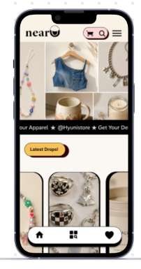
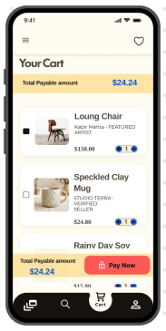
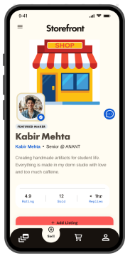
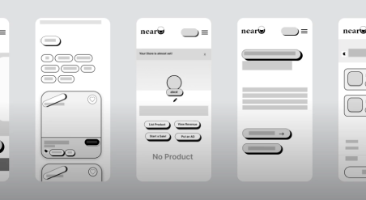
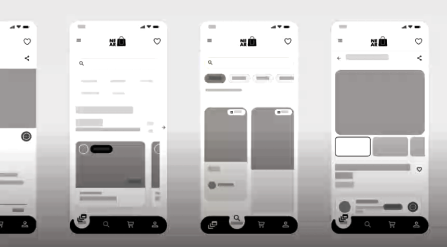
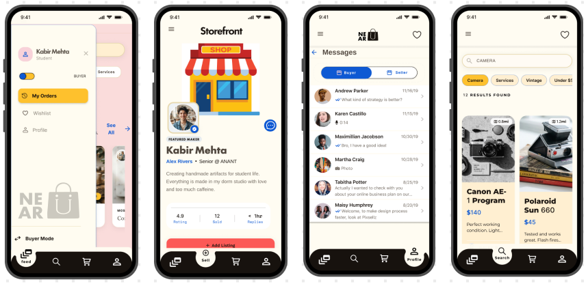
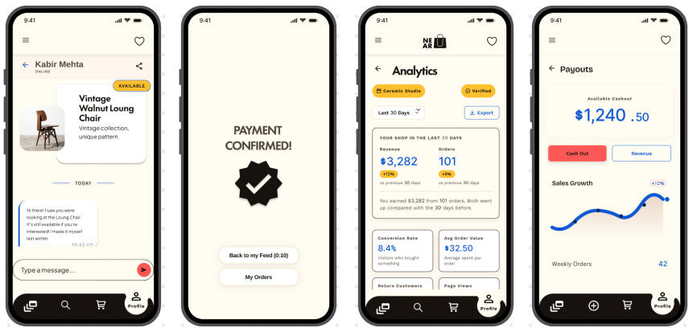

Case study
Building NearU
Designed with Ridhi Lakhina, from an idea conceptualized during our course Business in Design: Introduction. We focused on catering to student hustlers on campus — giving them a common storefront space so they have ease running their business all year round.

Context
Student Businesses are unorganised
Student businesses rely on social media and word of mouth to reach buyers. Disappearing listings, scattered conversations, and manual payment checks make buying and selling difficult to manage alongside classes.
NearU is a campus marketplace designed to connect student entrepreneurs with buyers at Anant University, making it easier to discover and support student businesses throughout the year.
Solution
One app, two sides of the same campus economy
Everyone starts on the same account and switches freely between buying and selling — a wishlist and checkout for buyers, a storefront and order tools for sellers.


After more research, we reduced the maximalist layout and removed competing visual elements to lower cognitive load — while keeping the color palette to preserve the app's playful, youthful personality. Instead of using color everywhere, we used it intentionally: to highlight key actions, categories, progress, and important decision points. This kept the experience expressive while making the user flow clearer and easier to scan.
Ideation
From sketches to a working flow
NearU began with wireframe sketches and early branding explorations, testing how a campus marketplace could look and work. These initial ideas gave us a starting point to investigate student needs and refine the experience.


Research
How students sell today
Focus and approach
We looked at how students buy and sell within campus — focusing on discovery, trust, and the effort required to manage a small business alongside classes — and looked into the platforms they already use.
We interviewed student entrepreneurs and buyers to understand how campus businesses operate beyond fests and occasional stalls: profit margins, goals, material sourcing, connections between student businesses, and buyers' experiences commissioning their peers.
Insights
- Products are easy to miss. Temporary stories and scattered posts make listings difficult to revisit.
- Trust matters on both sides. Buyers worry about receiving orders; sellers worry about genuine enquiries and payment.
- Every order involves repeated coordination. Confirming details, checking payments, and arranging pickups adds work.
- Availability changes around classes. Sellers need flexibility to limit orders and manage pickup times.
Design
Design opportunity
How might we keep products discoverable beyond a single post, make buyer and seller identities clearer, and bring order details and pickup coordination into one place?
Meet Kabir, our seller — who also likes to buy from fellow students
Kabir sells woodwork, ceramics, designs, and trinkets from his hostel room. What began as a way to fund his supplies now brings regular orders, which he manages alongside coursework.
- Goal
- Maintain a manageable source of income without letting the business take over his study time.
- Challenges
- Keeping track of DMs, confirming orders, and coordinating deliveries around classes.
- Needs
- One place to manage orders, set availability, and keep buyers informed.
Promote
Instagram stories, posts, and fest stalls help students get noticed.
Challenge: visibility disappears quickly.
Coordinate
Buyers ask questions, confirm customizations, and share details through DMs or WhatsApp.
Challenge: conversations and requests become difficult to track.
User needs
- Buyers need listings they can revisit, clear product information, and confidence that an order will be fulfilled — plus visibility beyond a single post.
- Sellers need visibility beyond their existing followers and simple tools to manage demand within their available time.
Brand
Onboarding
One account, two modes
Onboarding introduces NearU's purpose, verifies the student's campus, and lets them choose whether they want to buy or sell — a choice that can be switched easily later. This creates a trusted campus-only space while tailoring the experience to each user's needs.

Scope
Core features
NearU works as a campus commerce service: a platform that gives student sellers their own storefront, discovery, order tools, and verified buyers within one college community.

Business model
- Transaction fee1–2% on completed orders.
- Seller boostsPaid promotion for listings during fests, launches, or high-demand periods.
- Campus partnershipsCollaborate with colleges, entrepreneurship cells, and fest teams to onboard sellers.
- Delivery commissionA small fee when campus delivery or pickup support is introduced.
- Premium seller toolsOptional analytics, custom storefront themes, or priority visibility for regular sellers.
Clear to browse, easy to manage between classes, and familiar enough to build trust between students.